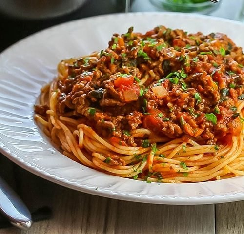

I have tried to make this dish as simple as possible, as you get better you can add more ingredients ‐ try cooking on a lower heat for longer if you have the time.
A Classic College Recipe ‐ Simplified

500g beef mince
1 tbsp olive oil
1 onion, finely chopped
1 cup beef stock
Clove of garlic
Carrots, mushroom and celery (optional)
1 tsp dried mixed or Italian-‐style herbs
Squirt of tomato paste
1 x 425g passatta or chopped tomatoes
1. Heat oil in a heavy‐based pan and add onion, stirring over a moderate heat for 1‐2 minutes.
2.Add mince, stirring constantly until well browned.
3.Stir in remaining ingredients.
4. TCover and simmer gently for about 30 minutes, or until cooked through (if using chopped tomatoes this will take a bit longer.
5.Serve with your favourite spaghetti, bread and salad. ENJOY!